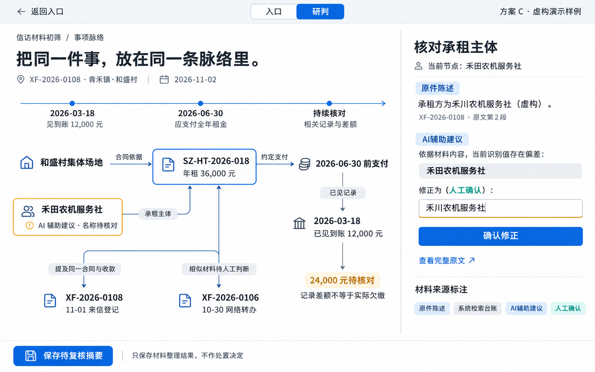

A
沉浸式材料审阅
依据，留在对应原文旁。

原文是主角 · 随文边注 · 按需展开
从一份来信进入宽幅阅读。要素、纠错与来源贴着段落出现，读到哪里，核对到哪里。
适合逐份精读、对照原件的工作批注与原文关系直接；同时查看许多材料时，需要频繁切换。
不改变工作人员的判断权，探索更自然的初筛方式。
每案包含工作入口与核心研判界面。
页面中的纠错、对照、保存与提交仅用于设计体验；刷新会恢复固定样例。
依据，留在对应原文旁。
从一份来信进入宽幅阅读。要素、纠错与来源贴着段落出现，读到哪里，核对到哪里。
打开，就接得上手头的工作。

从新的来件或未完成笔记开始。围绕可编辑整理稿工作，需要时再打开原件和台账依据。
先把信息之间的关系看清。

从一个待厘清的问题进入。项目、主体、付款节点与来源形成可检视的脉络，不把连线当作事实。
和盛村集体场地租金：约定36,000元，已见到账12,000元，24,000元差额待核。三案都包含同一个AI提取错误「禾田 → 禾川」、同一份相似举报0106。分别体验：开始 → 阅读与提取 → 纠错 → 对照依据 → 保存摘要 → 人工检查后自选提交。它们是验证任务，不是五步向导。